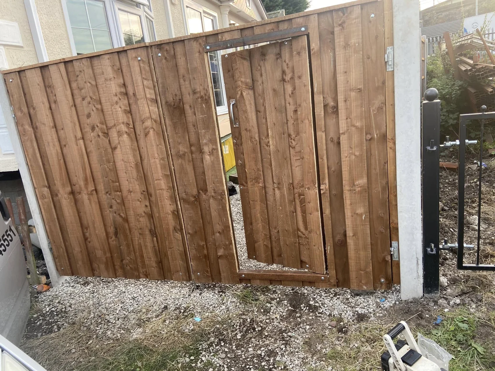

MANCHESTER LANDSCAPE AND GROUNDWORX LTD · GREATER MANCHESTER
Outdoor spaces.
Made for living.
Driveways, patios, landscaping, groundworks and 3D garden design across Greater Manchester. Start with your ideas. Let’s shape the possibilities.
Free quotesGreater Manchester
OUTDOOR LIVING, CONSIDERED
Your space.
Full of possibilities.
Manchester Landscape and Groundworx LTD provides landscaping, paving and garden design across Greater Manchester.
From a practical new driveway to a garden with places to sit, plant and unwind, start with what you want from your space. Our project photographs and videos show the materials and details that can bring it together.
Explore the project collection →
ROOM TO ENJOY THE OUTDOORS
A garden with
more to give.
Raised sleeper beds, green lawn areas, gabion features and paving connect this garden to its timber-covered seating space. See the layout from two angles.
Explore garden landscaping →
OUR PROJECTS
A good first impression. A garden to enjoy.
Explore driveway, patio and garden projects.
DECKING & GARDEN STRUCTURES
Stay a little
longer outside.
A grey deck, sheltered seating and planting create a retreat at the end of this garden. Materials and layout work together to make the space feel part of the home.
Explore decks & garden structures →
PROJECT VIDEOS
Take a look around.
Two garden walkthroughs, showing the layout and finishing details from ground level.
PLAN YOUR NEXT PROJECT
A few useful answers.
Where do you work?
Across Greater Manchester, including Manchester, Salford, Stockport, Oldham, Rochdale, Bolton and Wigan. Send your postcode to check availability.
Can you help with a whole garden?
Yes. Enquiries are welcome for landscaping projects that bring together paving, lawns, raised beds and garden features, as well as individual patios or driveways.
Do you offer 3D designs?
Yes. 3D design is among our services. Tell us about the space and your priorities so we can discuss the design work required.
Are quotes free?
Yes. Get in touch for a free quote. Include photographs, your postcode, approximate dimensions and the work you would like done.
FREE PROJECT QUOTE
Let’s talk about your outdoor space.
Tell us what you have in mind. This form opens a WhatsApp draft with all your details, ready for you to review, add photos and send.